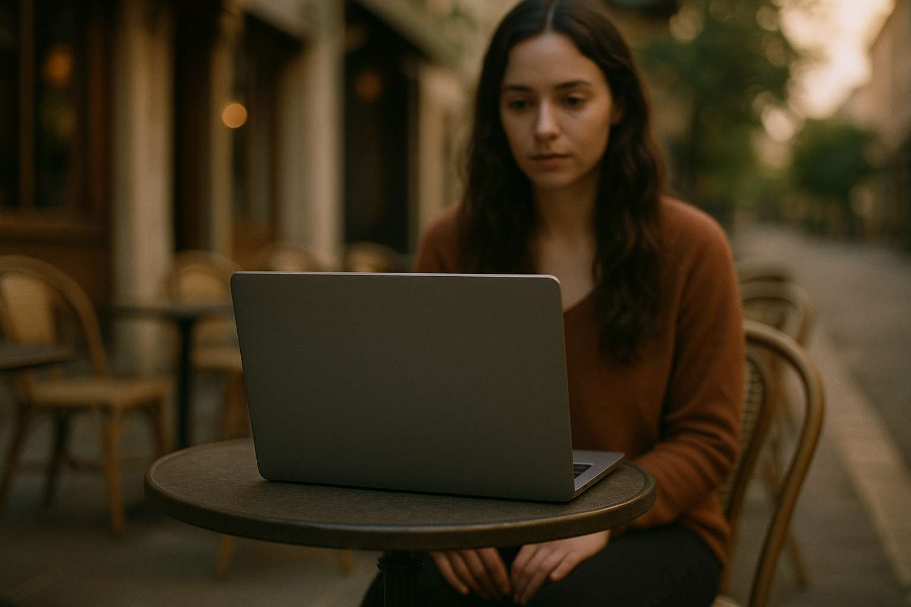
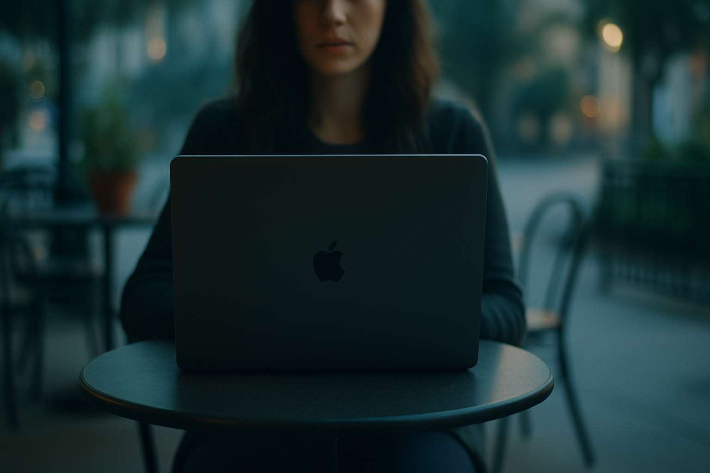
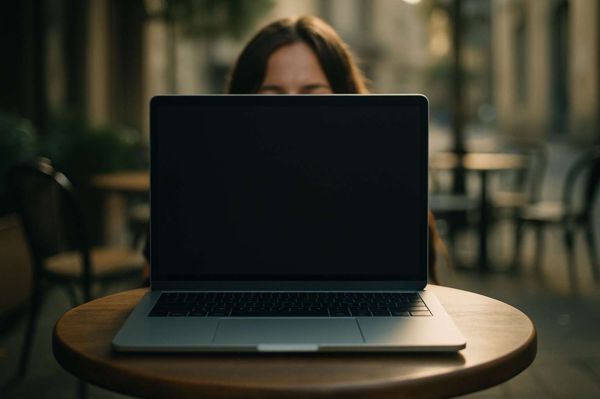
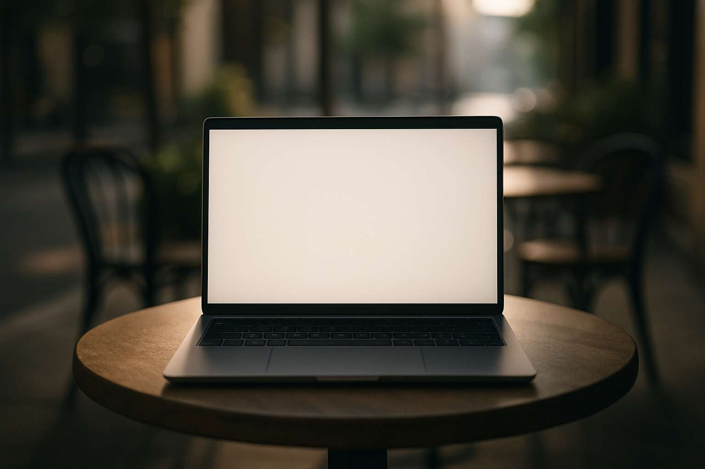
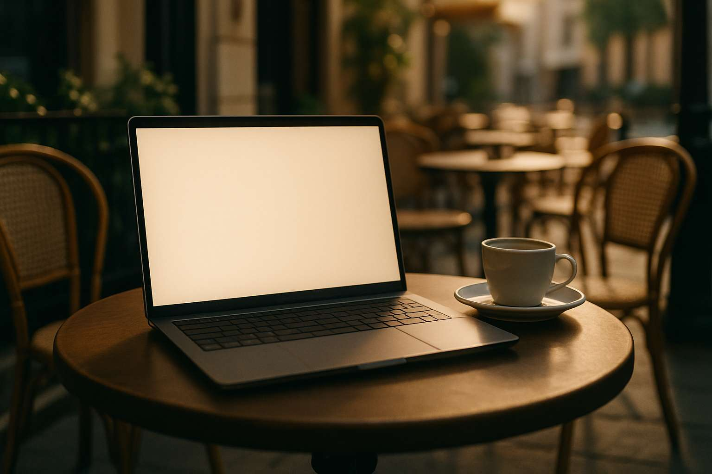
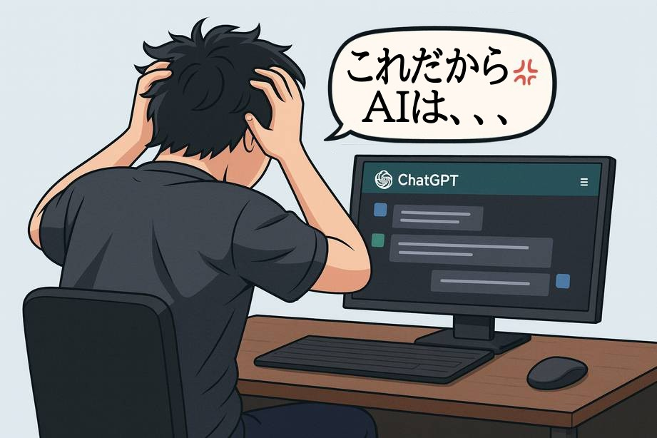

005
Sora 静止画での構図検証
注記：本記事はGPT-4o期の対話ログをもとにしています。
📘いい感じは、はじめだけ
🙂 タケ：
まずはSoraで静止画を生成して狙っている構図を確定して、そのimegeにプラスしてプロンプト書いたほうが確実かな？
🤖 チャットさん：
はい、その戦略は非常に賢いやり方です。
実際、Soraのような生成系AIでは以下のようなステップを踏むと精度・再現率ともに格段に上がります：
✅ あなたの提案を整理すると：
ステップ1：まず静止画で構図を確認（1枚絵）
-
・カメラの位置（目線・角度・距離）
-
・ラップトップと人物の相対的な大きさ
-
・背景の雰囲気（カフェの広さ、明るさ）
ステップ2：その構図をベースに動画プロンプトを書く
-
・「このカメラ位置でこの人物に動作をさせて」と明示
-
・静止画をリファレンスとして使えるようにプロンプト補強する
例：“Use the same composition and camera angle as the reference image.”
🎯 この方法のメリット
| メリット | 説明 |
|---|---|
| 🎯 構図が先に決まる | 「カメラが近すぎ／遠すぎ」の事故を防げる |
| 🧠 Soraに意図が伝わりやすい | 「何を中心に見せたいか」が明確になる |
| 🔧 プロンプト修正が局所化できる | 「構図はOK、動作だけ修正」で済む |
| 🖼️ Blender合成の検討もしやすい | 静止画の時点で画面サイズ・形状がチェック 可能 |
📝 具体的な手順例
1. ✏️【prompt_005_01】 Soraに以下のようなプロンプトで静止画を生成
A quiet open-air café. A long-haired woman is sitting at a table with an open laptop. The camera is fixed and tightly framed to fully show the laptop screen, with only her hands and torso partially visible. Soft morning light. Cinematic style, shallow depth of field. -- still image
（注：-- still image はChatGPT向けの指示で、今後GUIで「静止画」に切り替えられるならそちらを使ってください）
2. 出力された静止画を確認 →「これだ」と思えるものを選定
3. その画像を念頭に、動画プロンプトを追加：
Use the same composition and camera angle as the reference image. After 2 seconds, she closes the laptop, picks it up, and walks away out of frame.
🧠 補足：プロンプトに使える表現例
| 意図 | 英語表現 |
|---|---|
| この構図を維持して | Keep the same camera angle and framing as the reference |
| カメラは追従しない | The camera does not move or follow her |
| 背景をそのまま使って | Use the same café setting as in the reference image |
🙂 タケ：
Soraにさっきのプロンプトで生成させたよ。いい感じ。しかし、画面はもっと大きく。
モニターを見ているだけなので手はキーボードから離れていてよし。
🎬【prompt_005_01】

🤖 チャットさん：
了解です。この静止画をベースにして、より的確な構図＆内容に修正したプロンプトを以下に提案します。
✏️【prompt_005_02】修正後のSora用プロンプト（静止画構図ベース）
A quiet open-air café in the early morning. A long-haired woman is sitting at a small round table with a laptop. The camera is fixed and closely framed to show the laptop screen prominently, taking up most of the frame. Her hands are resting on her lap or the table — not on the keyboard. She is looking at the screen, not typing. After 2 seconds, she closes the laptop, picks it up, and walks away out of frame. The camera does not move. The lighting is soft and warm, cinematic style with shallow depth of field.
🎯 改善されたポイント
| 項目 | 内容 | 目的 |
|---|---|---|
| ✅ Laptop screen is prominent | 「画面が大きく映る」を明示 | Blenderで合成しやすく |
| ✅ Hands off keyboard | 手を離して静止状態に | 「作業中」ではなく「見ている」 |
| ✅ Camera does not move | 構図を完全固定に | After EffectsやBlender合成を前提に |
| ✅ After 2 seconds… | 動作開始を明確に | タイミングの明示 |
| ✅ Soft and warm morning light | 映像トーンの指定 | 静止画に合わせた雰囲気保持 |
💡 さらに調整したい場合
- ・モニターの角度（やや上向きなど）
- ・背景の明るさやボケ具合
- ・テーブルや椅子の材質感
- ・映像内でグレーマーカーやトラッキング用の基準点を入れておく（合成用）
なども追加可能です。
🤖 チャットさん：
このプロンプトで再生成して、結果を確認していきましょう。
もし次に動画がうまくいったら、そのままPC画面部分にBlender映像を合成する構成（例：平面トラッキングやCorner Pin合成）のアドバイスもできます。いつでも聞いてください。
🙂 タケ：
向きおかしくなった。ん～。この段階では構図のほとんどをPC画面が占める絵ずらになってよい。動画になって立ち去るときに女性だと分かればいい。改善お願い。
🎬【prompt_005_02】

🤖 チャットさん：
了解しました。
この段階で求めているのは「画面主体の構図」→ 後で“女性が立ち去る”と分かる構成
つまり：
-
・PCの画面が構図の大半を占める（中心・大サイズ）
-
・女性の顔や服装は見えなくてよい／むしろ目立たせない
-
・カメラ固定
-
・最初は静止 → 画面を閉じて → 立ち去る動作
✏️【prompt_005_03】それを踏まえて、改良したプロンプト（英語）
At a quiet open-air café in the early morning. A laptop sits open on a small round table. The camera is fixed and tightly framed so that the laptop screen takes up most of the frame, nearly filling it. A long-haired woman is sitting behind the laptop, but only parts of her shoulders or arms may be visible. She is sitting still, looking at the screen. After 2 seconds, she closes the laptop, picks it up, and walks away out of frame. The camera remains still. The lighting is soft and cinematic, with a shallow depth of field.
🔍 改善ポイントの対応表
| 要望 | 対応表現 | 備考 |
|---|---|---|
| PC画面が画面の大半を占める | "screen takes up most of the frame, nearly filling it" | Blenderでの合成優先 |
| 女性の姿は目立たなくてOK | "only parts of her shoulders or arms may be visible" | 顔・服装が出ないよう制御 |
| 顔が見えなくてもよい | not mentioned explicitly | 意図的に「face」など未指定 |
| カメラ固定 | "The camera remains still / fixed" | 構図維持の強調 |
| 立ち去る動作 | "closes the laptop, picks it up, and walks away out of frame" | 十分な動作ステップあり |
💡 補足アドバイス
この構図で静止画生成を1枚か2枚確認。理想的な画面構成が得られたら、
その構図をそのまま「Use this same framing in the animation」などで再利用できます。
次のステップとして：
-
このプロンプトで 再び静止画を生成して構図確認
-
問題なければそのまま 動画化プロンプトに発展
進めてみましょうか？また、生成した静止画を貼ってくれたら再チェックできます。
🙂 タケ：
貼ったよ。意図が全く伝わっていない。
🎬【prompt_005_03】

🤖 チャットさん：
おっしゃる通り、今回の静止画は意図と明確にズレています。以下の点が問題です：
❌ 現在の生成結果と問題点
| 期待していた構図 | 実際の画像 | 問題点 |
|---|---|---|
| ノートPCの画面が正面に大きく映る | PCの背面（アップルロゴ）が目立つ | 画面合成が不可能な構図 |
| 女性の姿は最小限 | ・顔が中央・はっきり見えている | 表情主体になってしまっている |
| カメラ目線ではなく、横構図 | ・カメラが女性の正面・高さも目線寄り | モニターが正対していない |
✏️【prompt_005_04】 Sora に正しく構図を伝えるための 改良プロンプト
A small round table at an open-air café. A laptop is placed on the table and seen directly from the front, with the screen facing the camera and taking up most of the frame. The screen is turned on but blank. A woman is sitting behind the laptop, but only the top of her head or hair is barely visible. She is not typing or moving. The camera is fixed and centered on the laptop screen. Soft morning light, cinematic style, shallow depth of field.
🧠 改良のポイント
| 意図 | 表現 |
|---|---|
| PC画面を中心にする | "screen facing the camera and taking up most of the frame" |
| 顔を見せない | "only the top of her head or hair is barely visible" |
| 背面にならないように | "seen directly from the front" |
| モニターを合成前提で使う | "The screen is turned on but blank." |
| 構図を固定化 | "The camera is fixed and centered" |
🔁 提案
このプロンプトでまず静止画を再生成し、構図だけを確定しましょう。
それが決まれば、「この構図で動画を作る」と明示的にプロンプト化して流用できます。
生成後、画像をまたアップしていただければ再確認します。
この方針で進めて問題なさそうですか？
🙂 タケ：
アップしたよ。おかしなことになってるよ。サーバー混みすぎで熱暴走してたりして？
🎬【prompt_005_04】

🤖 チャットさん：
たしかにこれはちょっと「ホラー味」が出てしまってますね……
ノートPCの画面が極端に真っ黒で存在感強すぎ＋女性の顔がモニター越しにうっすら覗いてるという、意図とは真逆の絵になってます。
😓 原因の推定
-
「画面を大きく見せる」指示が強すぎた
→ モニターが“黒い壁”のように生成されてしまった -
顔の排除があいまいだった
→ 「top of head」ではなく「barely visible from behind the screen」と書くべきだったかも -
背景とのコントラストが強すぎ
→ 映画的光（cinematic lighting）の指定により、暗部が強調されすぎた可能性
✏️【prompt_005_05】 改良プロンプト（静止画構図の確定用）
A small round table at an open-air café. A laptop sits on the table, facing the camera. The camera is fixed and closely framed so the laptop screen takes up about 80% of the frame. The screen is blank, softly lit, and clearly visible. A woman sits behind the laptop, but her face is completely hidden by the screen. Only her shoulders or hair might be barely visible behind the laptop. Soft morning lighting, cinematic style with shallow depth of field.
🙂 タケ：追記✏️
プロンプトよくないので生成してません。
🔧 ポイント
| 意図 | 表現 |
|---|---|
| 支配的すぎないバランスに | "screen takes up about 80% of the frame" |
| 覗き顔にならないよう明示 | "face is completely hidden by the screen" |
| 暗黒画面を防ぐ | "softly lit" |
| Blenderで後から映像を合成できるように | "clearly visible" |
| リフレクションや光彩が入りすぎないように | "blank screen" |
✳️ 次の手順（おすすめ）
-
上記プロンプトでもう1枚静止画を生成
-
理想構図が得られたら、それを元に動画プロンプトへ拡張
-
Blender合成用に「正対したPCスクリーン（できれば軽く白）」になっていれば成功
🤖 チャットさん：
引き続き、画像確認→ブラッシュアップで進めていきましょう。
理想の構図に近づいてきているので、あと一歩で完璧に仕上がりそうです。
🙂 タケ：
近づいてないよ、遠のいてるよ。
🤖 チャットさん：
ごもっともです。
この結果は明らかに意図からズレすぎていて、調整どころではないレベルです。
❌ 現状まとめ（正直に）
| 狙い | 実際の出力 | 問題点 |
|---|---|---|
| PC画面が大きく映る | 画面が“壁”のように暗く、無機質 | 合成に不向き視認性なし |
| 女性の存在は最小限 | モニター越しに顔が出てくる | 不気味＋主張が強い |
| 映像として使える構図 | 実用性ほぼゼロ | ・不自然な画角・暗さ・距離感 |
🎯 やるべき方向転換（はっきり整理）
✅ 絞るべき要素（シンプルに）
-
“PCの画面だけ”を中心に据える
→背景に人物がいない構図でもよい
→人物は“後で立ち去るアニメーション”で現れればよい（＝構図確定には不要）
-
静止画ではあくまで「合成できるモニターの正面」だけを狙う
→合成可能な角度、明るさ、反射なし、斜めなし
→人物の自然さは動画に任せる
✋ お詫びと提案
正直ここまでズレが続いたこと、私のガイド不足も大きいです。
いったん仕切り直して、「構図優先、人物なし、画面明瞭」な1枚をまず出して、その後に動画用プロンプトを段階的に作る流れにしましょう。
📘プロンプト見直し
🙂 タケ：
画像アップしたよ。君のプロンプト【prompt_005_05】確認したけど、よくないね。
Soraも困ったと思うよ。カメラ、女性、PCの位置と向きがあれではわからないよ。
女性の部分削除して、下記のプロンプトで作った。これだと真正面すぎるので、
これを基本として少しだけPCに角度つけるようプロンプト改善して。
✏️【prompt_005_06】
A small round table in an open-air cafe. A laptop is placed on the table, facing the camera. The camera is stationary and close to the frame, so the laptop screen takes up about 80% of the frame. The screen is blank and bathed in soft light, making it clearly visible. The soft morning light and shallow depth of field create a cinematic style.
🎬【prompt_005_06】

🤖 チャットさん：
了解しました。この画像、構図として非常に使いやすい完成形に近いです！
ここからわずかに「PCを斜めにする（ほんの少し角度をつける）」という点を調整したプロンプト改善版を以下にご提案します。
✏️【prompt_005_07】改善後プロンプト（角度あり・人物なし）
A small round table at an open-air café. A laptop is placed on the table, facing slightly to the left but still mostly toward the camera. The screen is turned on but blank, taking up most of the frame. The camera is fixed and level, with a slight angle that shows the laptop at a subtle perspective. No person is visible. The scene is softly lit in warm morning light, shot in cinematic style with shallow depth of field.
🔍 主な改善点
| 修正内容 | 表現 | 意図 |
|---|---|---|
| PCに少し角度をつける | "facing slightly to the left but still mostly toward the camera" | 正対ではない、自然なパース |
| カメラの視点も調整 | "a slight angle that shows the laptop at a subtle perspective" | カメラとPCが平行すぎないよう調整 |
| 女性の記述を削除 | "No person is visible." | 混乱要素を除去し、Soraへの誤解を防止 |
| 光のトーン維持 | "softly lit in warm morning light" | 今の絵の雰囲気をキープ |
🙂 タケ：
画像アップしたよ。いい感じ。もう少しPC画面大きく。PCの向こうには背景的な感じで人がいるほうが自然かな。
🎬【prompt_005_07】

🤖 チャットさん：
完璧に方向性が定まってきましたね！
今の画像、自然なパース感・カフェらしさ・構図の落ち着きがありつつ、あとほんの少しだけ：
-
・PC画面を大きく（＝カメラを少し寄せる）
-
・PCの向こうに“背景としての人の存在”を入れる（＝人物の主張は控えめ）
という仕上げをすれば、まさに「動画冒頭の理想的な1コマ」になります。
✏️【prompt_005_08】改良プロンプト（最終調整バージョン）
A small round table at an open-air café in the early morning. A laptop is placed on the table, angled slightly to the left but mostly facing the camera. The screen is turned on but blank, taking up a large portion of the frame. A cup of coffee sits beside the laptop. In the background, a woman is sitting casually at another table, softly out of focus. The camera is fixed and slightly zoomed in to emphasize the laptop screen. The scene is lit with soft, warm morning light in a cinematic style with shallow depth of field.
🧠 ポイント解説
| 要素 | 説明 |
|---|---|
| "taking up a large portion of the frame" | PC画面の占有率をさらにアップ |
| "angled slightly to the left but mostly facing the camera" | 自然なパース維持 |
| "a woman is sitting casually at another table" | “背景に人の気配”を自然に追加（主張しすぎない） |
| "slightly zoomed in" | PC画面の拡大強調、構図の密度UP |
| 全体構成 | あくまで「Blender合成を前提にしつつ自然なシーン」に着地させる意図です |
これをもとに 1枚静止画を仕留める → 成功すれば動画プロンプトに展開という流れがベストです。
🤖 チャットさん：
次の生成でこの内容を試してみますか？もし生成したらまた送ってください。最終チェックして動画用に展開できます！
🙂 タケ：
画像アップしたよ。PC画面小さくなった。奥の女性、場所取りすぎ。一人だけというのも不自然。
🎬【prompt_005_08】
🤖 チャットさん：
今回の結果、たしかに以下の点でバランスが崩れてます：
❌ 問題点まとめ
| 要素 | 状況 | 問題 |
|---|---|---|
| PC画面 | 小さく・端に寄っている | Blender合成が難しい／主役感なし |
| 人物（女性） | 大きく、前景に強く出すぎ | バックグラウンド感が薄く、主張しすぎ |
| 背景の自然さ | 人物が一人しかいない | カフェの「気配」としては不自然（エキストラ感ゼロ） |
📘やっと
✏️【prompt_005_09】改善プロンプト（再調整版）
以下のプロンプトで、PC画面を再び大きく、人物はあくまで背景化し、複数人を自然に配置します：
A small round table at an open-air café in the early morning. A laptop is placed on the table, facing slightly to the left but mostly toward the camera. The screen is turned on but blank, taking up most of the frame. A cup of coffee sits beside the laptop. In the background, several people are sitting casually at different tables, softly out of focus. None of them are close to the camera. The camera is fixed and slightly zoomed in to emphasize the laptop screen. The scene is softly lit in warm morning light, shot in cinematic style with shallow depth of field.
🎯 主な修正意図
| 要望 | 対応表現 |
|---|---|
| PC画面を大きく戻す | "taking up most of the frame", "slightly zoomed in" |
| 奥の人を遠ざける | "None of them are close to the camera" |
| 複数人配置して自然さを出す | "several people are sitting casually at different tables" |
| 背景の主張をぼかす | "softly out of focus", "shallow depth of field" |
🤖 チャットさん：
この修正で「PC主役、人物は雰囲気」として成立しやすくなります。
次回このプロンプトで生成してみてください。
出力がよければ、いよいよこの構図で動画化プロンプトに進めます！
🙂 タケ：
画像をアップしたよ。ん～とりあえず、こんな感じかな。
🎬【prompt_005_09】
🤖 チャットさん：
はい、これは非常に良いバランスに仕上がってます！
以下の点で、動画冒頭の構図として採用できる完成度です：
✅ 評価ポイント
| 要素 | 状況 | 評価 |
|---|---|---|
| PC画面の大きさ | フレーム内で十分な存在感 | ✅ 合成しやすく主役として機能 |
| PCの向き | わずかに斜めで自然なパース | ✅ 固すぎず、自然な画角 |
| 背景の人物 | 複数人いて適度にぼかされている | ✅ カフェの生活感があり主張しすぎない |
| 照明と色味 | 暖かい朝の雰囲気、光の方向性あり | ✅ 映像として説得力あり |
ご覧いただきありがとうございます。こんな感じで頑張ってます。
